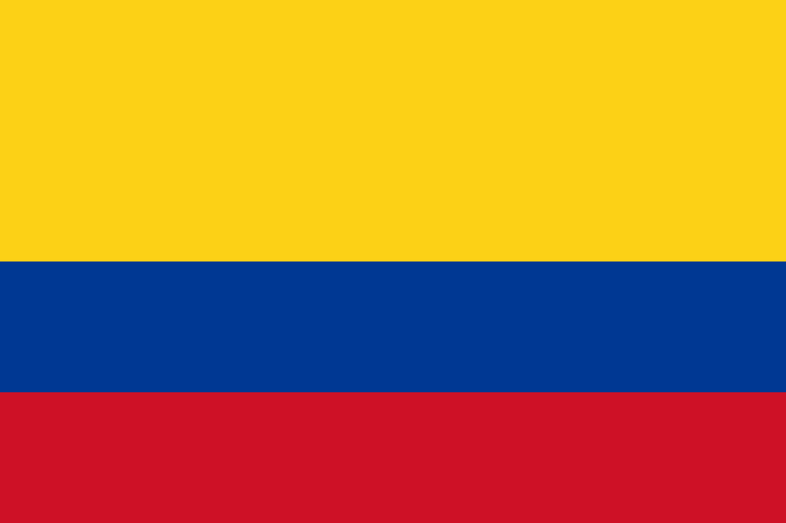
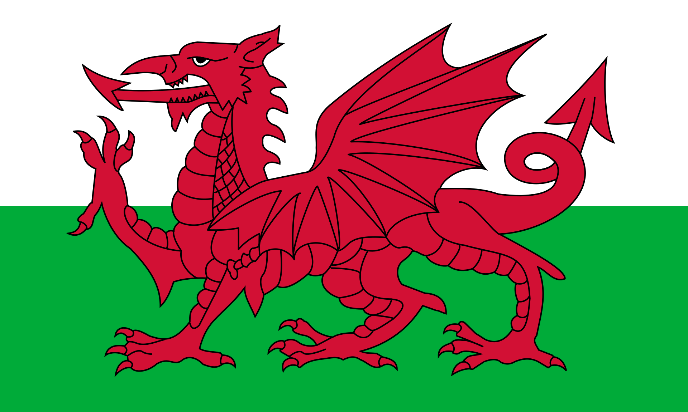

«Реал Мадрид» (ісп. Real Madrid Club de Fútbol) - іспанський професійний футбольний клуб з міста Мадрида. Визнаний ФІФА кращим футбольним клубом XX століття. «Реал Мадрид» - один з трьох клубів, які жодного разу не покидали вищий іспанський дивізіон, двома іншими є «Барселона» і «Атлетик Більбао». Є одним з найбільш титулованих клубів в іспанському футболі. На його рахунку 62 національних титулу: рекордні 33 титулу чемпіона Ла Ліги, 19 Кубків Іспанії і 10 суперкубків Іспанії. Є рекордсменом за кількістю перемог і голів в Лізі чемпіонів (13 разів, єдина команда, яка вигравала цей турнір - тоді ще Кубок Європейських чемпіонів - 5 разів поспіль).
За даними організації Deloitte, в сезоні 2016/17 «Реал» був другим за рівнем заробітку серед клубів з річним доходом 674,6 мільйона євро. Є одним з найцінніших спортивних клубів світу і найдорожчим футбольним клубом вартістю 4,2 мільярда доларів.


За даними організації Deloitte, в сезоні 2016/17 «Реал» був другим за рівнем заробітку серед клубів з річним доходом 674,6 мільйона євро. Є одним з найцінніших спортивних клубів світу і найдорожчим футбольним клубом вартістю 4,2 мільярда доларів.
Основний склад команди на сьогоднішній день(21.03.2020):
Форма (сезон 19/20):
Повний склад команди станом на 21.03.2020:
| № | Позиція | Ім'я | Рік народження |
|---|---|---|---|
| 1 |
Вр | Альфонс Ареола | 1993 |
| 13 | Вр | Тібо Куртуа | 1992 |
| 26 |
Вр | Дієго Альтубе | 2000 |
| 2 |
Зах | Дані Карвахаль | 1992 |
| 3 |
Зах | Едер Мілітан | 1998 |
| 4 |
Зах | Серхіо Рамос | 1986 |
| 5 |
Зах | Рафаель Варан | 1993 |
| 6 |
Зах | Начо | 1990 |
| 12 |
Зах | Марсело | 1988 |
| 19 |
Зах | Альваро Одріосола | 1995 |
| 23 |
Зах | Ферлан Менді | 1995 |
| 8 |
ПЗ | Тоні Крос | 1990 |
| 10 | ПЗ | Лука Модріч | 1985 |
| 14 |
ПЗ | Каземіро | 1992 |
| № | Позиція | Ім'я | Рік народження |
|---|---|---|---|
| 15 | ПЗ | Федерико Вальверде | 1998 |
| 16  | ПЗ | Хамес Родрігес | 1991 |
| 20 |
ПЗ | Марко Асенсіо | 1996 |
| 21 |
ПЗ | Брахім Діас | 1999 |
| 22 |
ПЗ | Іско | 1992 |
| 7 | Нап | Еден Азар | 1991 |
| 9 |
Нап | Карім Бензема | 1987 |
| 11  | Нап | Гарет Бейл | 1989 |
| 17 |
Нап | Лукас Васкез | 1991 |
| 18 |
Нап | Лука Йовіч | 1997 |
| 24 |
Нап | Маріано | 1993 |
| 25 |
Нап | Вінісіус Жуніор | 2000 |
| 27 |
Нап | Родріго | 2001 |